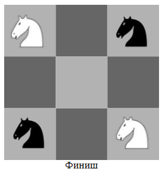

Содержание:
Решаем задачи с графами
ЗАДАЧА. Два чёрных и два белых коня стоят в углах шахматной доски 3 х 3, чёрные вверху, а белые внизу. Можно ли, передвигая их по шахматным правилам, поставить белых коней в два противоположных угла, а чёрных - в два других противоположных угла?
 |  |
РЕШЕНИЕ. Обозначим поля шахматной доски 3х3 буквами и построим графГрафИзображение объектов и связей между ними с помощью точек и линий. игры.
 |
Поля изобразим вершинами. Если из одного поля ходом коня можно попасть в другое поле, то соответствующие вершины свяжем ребром. Кони изображены рядом с теми вершинами, в которых они находятся в начале.
 |
Вопрос теперь стоит иначе: можно ли передвинуть коней вдоль рёбер графа из положения «Старт» в положение «Финиш»?
 |
На старте два белых коня рядом, и два чёрных тоже рядом; а на финише цвета коней чередуются. Чтобы пройти от старта к финишу, в какой-то момент придётся поставить белого и чёрного коня на одно и то же поле, а это не разрешается шахматными правилами.
ОТВЕТ: нельзя.
Как видите, иногда графы позволяют очень просто решать довольно хитрые и необычные задачи.